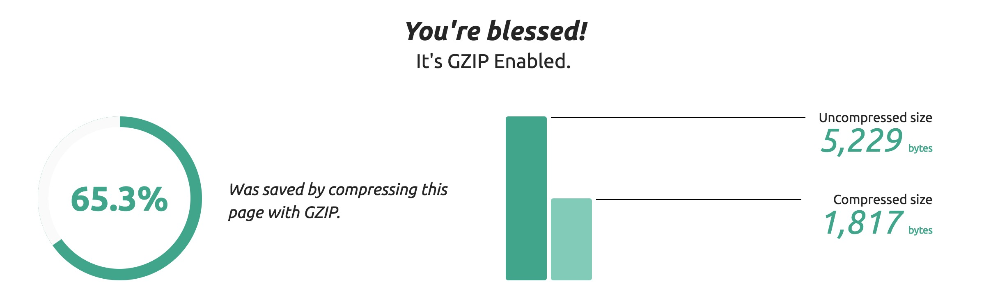

How I optimised my portfolio.
Published on 2/11/16
Code Validation
Making sure each page validates is an important part of web development. There are plenty of reasons behind why it is important to validate pages. Search engines, such as Google and Yahoo, find it hard to list web pages in their directory that include broken HTML or HTML elements that are used in the wrong context. For my portfolio, I used https://validator.w3.org in order to help validate my pages. This website gives any errors that crop up, whilst also giving an in depth explanation as to why the errors have occurred.
Page Optimisation
Another key task to take into consideration when developing a website is optimising web pages and the content on them. This could mean optimising images and reducing their file size or removing any unused resources, for example, large sections of unused code. Optimisation ensures that the user viewing the website is only downloading and caching relevant files that are going to be used within that page. This allows the page to load faster if thorough optimisation has been carried out. In order to make sure my images were optimised without losing quality, I used http://optimizilla.com/.
Google Chrome comes with a very useful tool which I used to help optimise my pages. The built in developer tool allowed me to see which files were being downloaded and the speed that it took for them to load once they had been downloaded. I was able to compare the time it took for the external files to download and load, with the time it took the DOM objects to load. Before I optimised my images, it was clear to me that some of the images were far too large in size and this caused some pages to take a while to load. I was also able to simulated a variety of connection speeds inside the developer tool, and again, I was able to compare the times different files took to load based on different connection speeds.
Furthermore, I have enabled GZIP compression to my website. This is done by adding several lines of code within the .htaccess file which is located in the root of the websites server. In my opinion GZIP is a great compression tool and more sites should be using it.
SEO Integration
In order for my portfolio to stand a good chance of being ranked highly on search engine result pages, it’s vital that I take SEO into consideration. For my portfolio in particular, I have ensured that all pages include: a relevant page title, a relevant page description and also ensured that there isn’t more than one H1 tag. Furthermore, I have double-checked that all HTML files have relevant file names. Making sure my portfolio is ranked highly on search engines could increase my chances of potential employers getting in contact with myself.